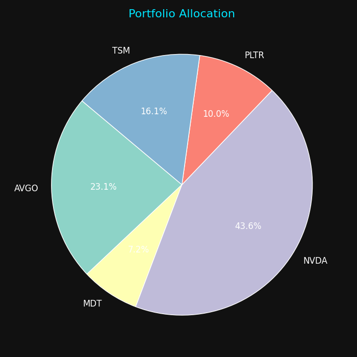
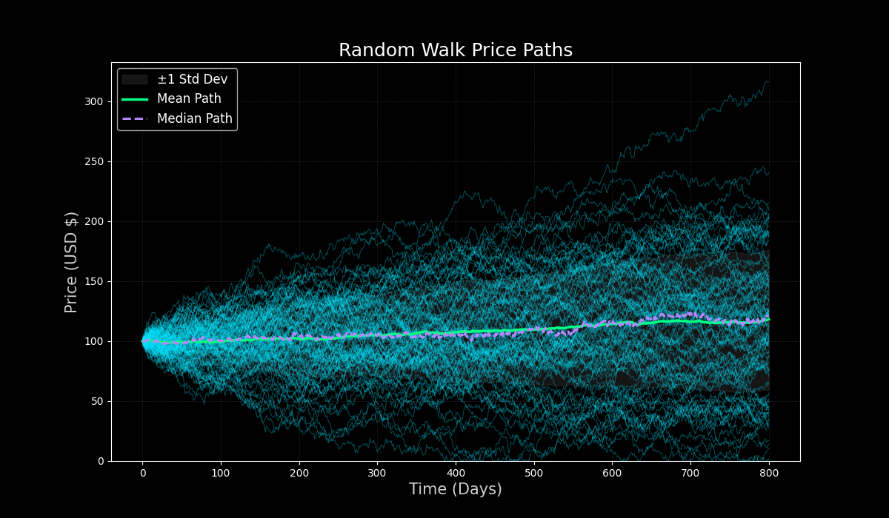
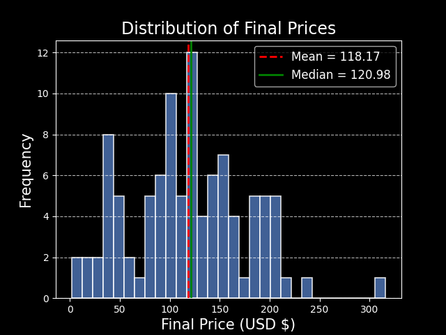
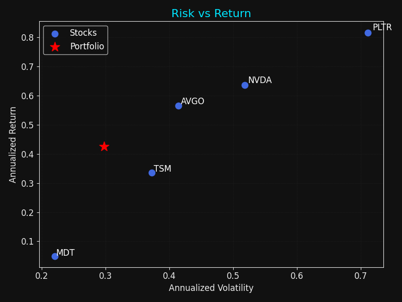
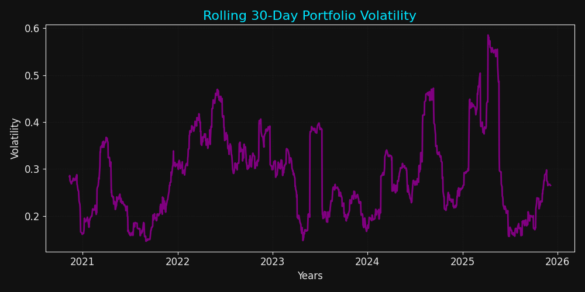

What it does
Generates many plausible future paths and summarises outcomes with interpretable plots (allocation, distributions, risk/return, regimes).
Why it matters
Recruiter-friendly: shows how I think about uncertainty and make results explainable, not just correct.
Figures
Click any image to zoom.





Notes
Old material preserved, rewritten for clarity.
Implementation
- Built with the same typography and motion system as the homepage for a seamless experience.
- Each figure answers one question; captions explain the decision insight.
- Next upgrade: add a short “methods” appendix + link to source code.